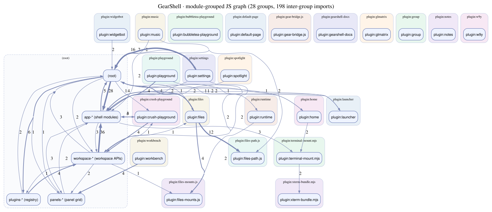

Web Native Agent Sandbox — the browser is the sandbox
GearShell runs CLI agents, tools and SDKs inside a stock browser with zero install: a buildless React SPA that boots a Wanix WASM microkernel providing VFS isolation, PTY terminals and multi-language runtimes. Click any layer for details.
Web Browser
Chrome / Safari / Firefox — plain HTTPS tab, no extension details ▾- The browser's own security model is the root of trust:
VFS isolation + sandboxed processes, data never leaves the browser. vercel.jsonships SPA rewrites plus COOP/COEP headers for cross-origin isolation.
Shell UI — index.html + app.js
React 18 · Dockview 8.2 · importmap · lucide details ▾- Body is a single
#wanix-hostdiv; the only module script isapp.js?v=…— top-level module code is the bootstrap, no DOMContentLoaded. - Dependencies resolved via
<script type="importmap">: react/react-dom 18.2, dockview(-react/-enterprise) 8.2, lucide-react 0.468 — all fromesm.sh. - Classic CDN scripts:
marked.min.js,reveal.js 6.0.1, xterm CSS, eruda (debug only). - All 9 stylesheets carry
?v=cache-busting versions; CSS is flat (no custom properties, colors hard-coded GitHub-dark:#0d1117 / #58a6ff…).
Dockview Panel Grid
unified dispatch via PANEL_ADDERS + addPanelByComponent() details ▾- Static panels (home, deck, settings, files, runtime, crush-runner) vs session panels keyed by
sessionId(terminal, workbench, vm, task, group, iframe). - Default startup panel:
['home'].PANEL_CREATION_OPTIONScatalog has 16 entries. - Top-right
AddTerminalButton: click = terminal, long-press/right-click = menu with terminal profiles + Wagi Dog + all panels. - iframe sub-panels: browser →
/browser/, bonsai →/bonsai/, codigo → codigo.dev, crush → justwasm.github.io/crush, rickroll → YouTube.
Vanilla JS module families
buildless · 500-line rule · ?v= version discipline details ▾- 500-line rule: any JS file over 500 lines is split into cohesive modules; every function stays under 50 lines.
- Module URL consistency: every internal import must carry the SAME
?v=— a version split loads a module twice, breaking DI/singleton state (e.g.files-registry.js"initFiles has not been called"). - DI-shim pattern: each submodule exports
initX(deps)+ lazyxDep(name); wiring is centralized at the bottom ofapp.js. - No global namespace (
window.appdoesn't exist); sessions live in module-level Maps.
Wanix WASM microkernel v0.4.14
dynamically imported · the terminal, VFS & tasks all live here details ▾- Shell code never touches the wasm directly:
loadActiveWorkspace()dynamically imports the runtime ES module, thencreateWanixSystem()builds<wanix-namespace id="wanix-system" wasm="…">inside#wanix-host. - wasm + module pinned to
@v0.4.8(semver only — legacy commit-hash/@main URLs are auto-migrated byapp-normalize.js). - Terminals are native
<wanix-term>elements backed by the kernel — no xterm.js JS, no WebSocket/PTY code in the shell (xterm is imported as CSS only). - Terminal sessions:
createTerminalSession()=<wanix-task id="repl-*">+<wanix-term path="#task/…">, overlaid viaattachOverlayTerminalSession. - The shell binary is a hush build mounted at
/bash; default commandbash -rcfile /profile.
OPFS + localStorage
no IndexedDB · no service worker (yet) details ▾- OPFS mounted through an
opfsbind;WANIX='/opfs/wanix',HOME='/opfs/home'. No IndexedDB anywhere. - Workspace layout / config is JSON in localStorage (e.g.
gear-shell-config); legacyhush-shellkeys are kept as stable ids. - Crush-runner scratch state (crushrc) is written to the in-memory
/tmp/crush-runner-<id>— never touches OPFS. - State sync via custom events:
gear-shell-workspace-changeon window,gear-shell-task-statuson task elements.
Five embedded apps
mounted as static panels · pointers updated deliberately details ▾bonsai— btwiuse/bonsai-webgpu-kernels: buildless 27B LLM, streams GGUF from Hugging Face.browser— btwiuse/gear-browser: Browser.js static build (Scramjet), mounted at/browser/.isolation— btwiuse/gear-isolation: Cloudflare Worker providing the Browser.js isolation sandbox on*.greggang.com.wanix-workbench— btwiuse/gear-wanix-workbench: Code-OSS static build + GearShell Wanix extension.web-pet— justwasm/wagi-web-pet: Wagi Dog desktop pet (drag / click / right-click chat).
Everything is fetched at runtime — nothing is bundled
importmap + CDN is the dependency strategy details ▾- Runtime wasm comes from
w9y.iopinned by commit → verified byte-identical with the old railway URL (sha256 07c81e6c…). - The only network URL baked into Crush's default crushrc is
AGW=https://agw.k0s.io. - Bonsai loads GGUF weights on demand from Hugging Face (requires HF token).
| Source | Provides | Delivered via |
|---|---|---|
| esm.sh | react 18.2 · react-dom 18.2 · dockview 8.2 · dockview-react 8.2 · dockview-enterprise 8.2 · lucide-react 0.468 | importmap (ES modules) |
| jsDelivr | marked.min.js · reveal.js 6.0.1 · @xterm/xterm css · eruda | classic scripts / stylesheets |
| w9y.io | wanix runtime module + wasm (v0.4.14) · bash (hush build) · w9y | fetch binds + dynamic import |
| Hugging Face | Bonsai 27B GGUF weights | streamed on demand |
| railway (agw) | Crush agent gateway | crushrc env |
Boot sequence & data flow
From a blank tab to a fully wired multi-panel agent sandbox — the exact bootstrap order from index.html and the bottom of app.js.
index.html parses — <base href="/">, importmap, 9 versioned stylesheets
Body is only <div id="wanix-host"></div>. Eruda attaches when the URL contains ?debug.
app.js?v=20260826.42 loads as the single module script
Top-level module code is the bootstrap — no DOMContentLoaded listener. Imports react, dockview, lucide and every panel module.
loadActiveWorkspace() → dynamic import of the Wanix runtime
Default https://w9y.io/…/wanix.min.js@v0.4.14 (wasm pinned to the same semver tag).
createWanixSystem() mounts the microkernel
Builds <wanix-namespace id="wanix-system" wasm="…"> inside #wanix-host — the kernel now owns terminal, VFS and tasks.
React mounts the Dockview grid
createRoot(#app-root) renders <DockviewReact className="dockview-theme-github-dark">; startup panel is ['home'].
DI wiring at the bottom of app.js
initLauncher → initPanels → initDeck → initRuntime → initFiles → initSettings → initHome → initCrushRunner — every panel receives its deps via initX(deps) + lazy xDep(name).
Terminal session anatomy
createTerminalSession()→<wanix-task id="repl-*">+<wanix-term path="#task/…">- Sessions overlay inside
#terminal-layerviaattachOverlayTerminalSession(absolute positioning, not Dockview content) - Default cmd
bash -rcfile /profile; profiles fromBUILTIN_TERMINAL_PROFILES(bash, crush) - The same
<wanix-term>machinery powers Workbench terminals and VM serial console
State & events
- Module-level Maps:
terminalSessions,workspaceTaskSessions,iframeSessions,vmSessions,workbenchSessions - Events:
gear-shell-workspace-change(window) ·gear-shell-task-status(task element) - Workspace JSON in localStorage; shell/wasm state in OPFS via the
opfsbind - No
window.appglobal — everything flows through the DI shim
URL & version discipline
- Runtime URLs only allow
@v<semver>— commit-hash /@mainpins are auto-migrated to the current default byapp-normalize.js - Every JS module import carries
?v=; a version split loads the module twice and breaks singletons - Legacy hush terminal profiles migrate automatically:
cmd hush -rcfile /tmp/profile→bash -rcfile /profile
Deck panel
loadSlidesMarkdown()fetchesslides.md?v=…, splits on/^\s*--\s*$/m, renders viamarked.parseinto reveal.js<section>s- reveal.js 6.0.1 + marked are global CDN scripts, passed through DI
Crush Runner pipeline & module families
How CLI agents (Crush) boot inside the browser, and how the buildless codebase is organized under the 500-line rule.
Entirely on the Wanix kernel — no Worker, no wasm fetch, no WebSocket.
which crush
Runs bash script which crush (CRUSH_DETECT_SCRIPT) and polls a /tmp marker file; on failure checks ${HOME}/.w9y/crush.
/w9y mod apply crush
Spawns /w9y mod apply crush, polls the marker directory for up to 90s; on timeout shows the install log. Runtimes: auto | gojs | wasi | js.
crushrc + terminal
prepareCrushLaunch() writes /tmp/crush-runner-<id>/crushrc (in-memory fs, never OPFS), forces CRUSH_GLOBAL_CONFIG, then opens a terminal panel or inline overlay.
Each original giant was carved into cohesive files (<500 lines); facades keep the entry import lines stable. Internal imports carry matching ?v= versions.
app.js → 17 files
app.js // entry + DI wiring ├─ app-constants.js // data, DEFAULT_CMD, binds ├─ app-normalize.js // legacy config migration ├─ app-storage.js ├─ app-state.js // dependency-free session state ├─ app-workspace.js // + presets / store / binds ├─ app-panels.js // + panels-store ├─ app-sessions.js // session Maps ├─ app-terminal-*.js // profiles + sessions └─ app-wanix.js
crush-runner.js → 10 files
crush-runner.js // facade ├─ crush-deps.js // dep registry + id counters ├─ crush-presets.js // default profile + builtins ├─ crush-config.js // dirs + launch prep ├─ crush-install.js // detect + install ├─ crush-json-edit.js ├─ crush-preset-crud.js ├─ crush-panel-controller.js // ctl state/handlers ├─ crush-panel-config.js // config section JSX └─ crush-panel.js // component + addCrushRunnerPanel
settings.js → 11 files
settings.js // facade ├─ settings-deps.js ├─ settings-template.js ├─ settings-config.js ├─ settings-launcher.js ├─ settings-preset-library.js ├─ settings-workspace.js ├─ settings-system.js ├─ settings-binds.js ├─ settings-task.js ├─ settings-terminal-editor.js ├─ settings-icons.js / settings-panel.js
files-* → 16 files
files.js // facade ├─ files-registry.js // DI (initFiles singleton) ├─ files-panel-*.js // sections / hooks ├─ files-tree.js // + path / ui / parts ├─ files-editor.js ├─ files-mounts.js // local/remote mounts ├─ files-favorites.js // + favorites-ui ├─ files-context-menu.js // + context-menu-ui ├─ files-info.js / files-topbar.js / files-resize.js
import from the repo at
HEAD (top-level *.js / *.mjs plus
plugin/; submodules and node_modules are skipped).
Rebuild with python3 scripts/build-js-deps-graph.py.
Three views are emitted:
Module groups 28 nodes · 206 edges
Recommended first view — one node per directory / plugin family.
Edge labels show how many imports cross between groups; thicker arrows = heavier traffic.
App reachable 69 files · 246 edges
Everything reachable from app.js in ≤ 2 hops.
Shows the bootstrap wiring story without the rest of the codebase.
Detailed 158 files · 506 edges
Full per-file graph, clustered by directory.
Dense — open in a new tab for pan/zoom.
module-grouped view
pan / zoom the SVG; clusters group files by directory.
- Top-level
(root)cluster:app.jsbootstrap, plugins registry, terminal bridge, workspace APIs. plugin:<name>clusters: each GearShell plugin (settings, files, terminal-mount, launcher, …) is a self-contained cluster of files.- Cross-cluster arrows show real imports — e.g.
plugin:filespulls fromworkspace-*&app-*;app-*pulls from every plugin manifest. - Other views: 2-hop from
app.js· full per-file · sources:js-deps.dot· app.dot · detailed.dot · generatorscripts/build-js-deps-graph.py.
{kind=link}
{kind=link}
| Rule | Why it exists | Where |
|---|---|---|
| 500-line / 50-line caps | Forces cohesive, reviewable modules | all JS |
Matching ?v= on every import | ES modules cache by full URL; a split loads two instances and breaks DI singletons | all importers |
Runtime pins are @v<semver> only | Legacy hash/@main URLs auto-migrate to the current default | app-normalize.js · app-constants.js |
| Buildless: importmap + CDN | Zero install for users, cacheable static host (vercel) | index.html |
| Shell never touches wasm directly | All kernel work goes through Wanix elements/tasks | app-wanix.js |
ESM check with node --input-type=module | node --check misses strict-mode errors on .js files | scripts/verify-static.mjs |